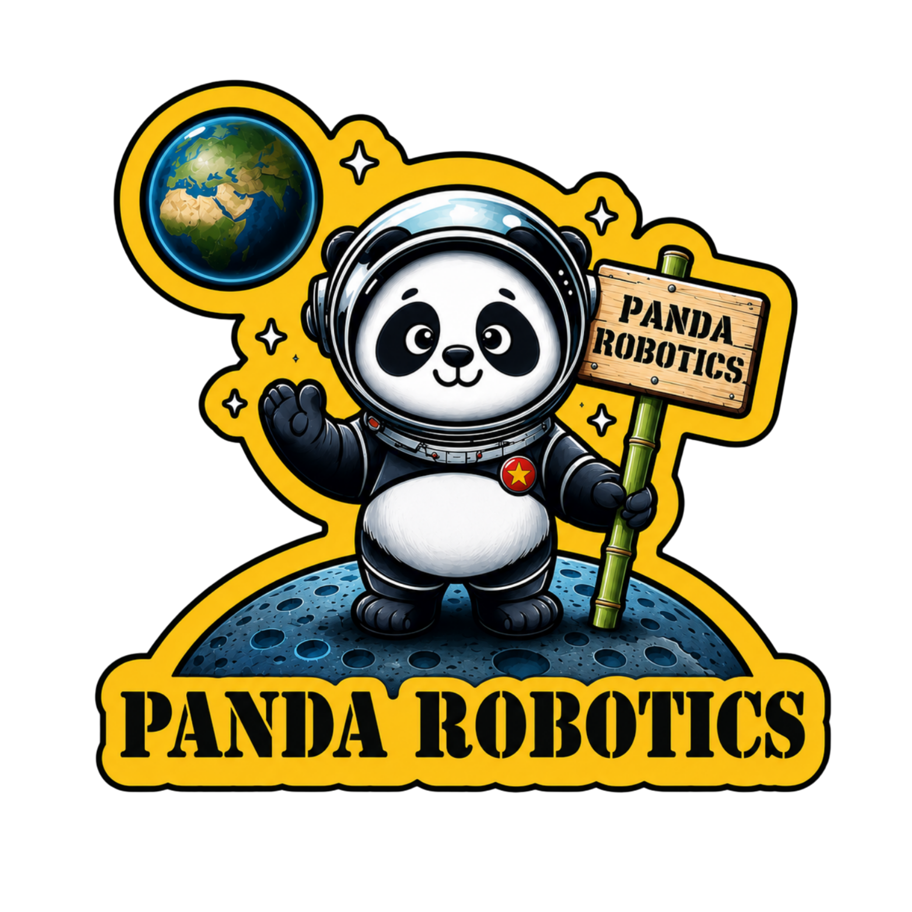

01 / VEX IQ
Lắp ráp.
Lập trình. Khám phá.
Theo dõi các giải VEX IQ và những mốc Notebook cần chuẩn bị trong mùa giải.
Xem lịch VEX IQBUILD · CODE · COMPETE
Khám phá, lập trình và chinh phục thử thách cùng Panda Robotics.

STAY CURIOUS. KEEP BUILDING.VỀ PANDA ROBOTICS
Robotics kết nối tư duy kỹ thuật, lập trình và tinh thần đồng đội. Panda Robotics là nơi những ý tưởng được thử nghiệm, cải tiến và mang đến sân đấu.
Theo dõi các giải VEX IQ và những mốc Notebook cần chuẩn bị trong mùa giải.
Xem lịch VEX IQTheo dõi các giải VEX V5, vòng loại, chung kết và các sự kiện Signature.
Xem lịch VEX V5MỌI CỘT MỐC. MỘT TIMELINE.
Lịch thi đấu, deadline Notebook và đếm ngược trực tiếp cho VEX IQ & V5.